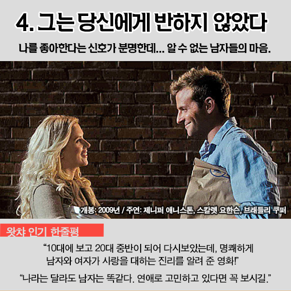

- yang
- SeoYeon
- good
Who is SeoYeon Yang?서여니
나는 서연이야. 코딩 야학 공부를 열심히 배보자 아자아자 화이팅
'-에요'는 어미로서, '이다', '아니다'의 어간 뒤에 붙어 쓰이므로, '책이에요, 아니에요'와 같이 쓰입니다.
다만 받침이 없는 체언 '어디', '거' 등 뒤에는 서술격 조사 어간 '이'가 붙고 그 뒤에 어미 '-에요'가 붙은 '-이에요'의 준말 '예요'가 쓰이므로, '어디예요/보내지 않을 거예요.'와 같이 쓰게 됩니다.
HTML elements are the building blocks of HTML pages. With HTML constructs, images and other objects, such as interactive forms, may be embedded into the rendered page. It provides a means to create structured documents by denoting structural semantics for text such as headings, paragraphs, lists, links, quotes and other items. HTML elements are delineated by tags, written using angle brackets.
Web browsers receive HTML documents from a web server or from local storage and render them into multimedia web pages. HTML describes the structure of a web page semantically and originally included cues for the appearance of the document.

br tag는 그냥 줄바꿈, p tag는 단락태그. 두개가 결론은 같지만, p tag를 쓰는게 더 좋음
근데 p tag쓸때 단락 사이 떨어뜨리고 싶으면? style margin-top 40 저거는 단락 위에 40픽셀 떨어뜨려 놓겠다는 의미
style은 CSS라는데 이게 뭔지는 잘 모르겠음 우리 범위 아님 ㅋㅋ
width, src는 tag가 이름만으로는 정보가 부족할때 쓰며 '속성' 영어로는 'attribute'라고 한다.
부모 자식과 목록
ctl키를 누른 상태로 클릭 클릭 하면 커서가 여러곳에 생겨서 한번에 쓸 수 있다. 편함
li tag는 부모태그인 ul(unordered list) 혹은 ol(ordered list, 자동으로 넘버링됨) tag를 갖는다.(목록을 만드는것)
title은 웹페이지의 제목을 설정(책 표지와 같은 역할)
utf8 기본설정 안돼있으면 한글 깨짐. 이 두개는 제목:head로 묶기 나머지는 본문 : body로 묶기